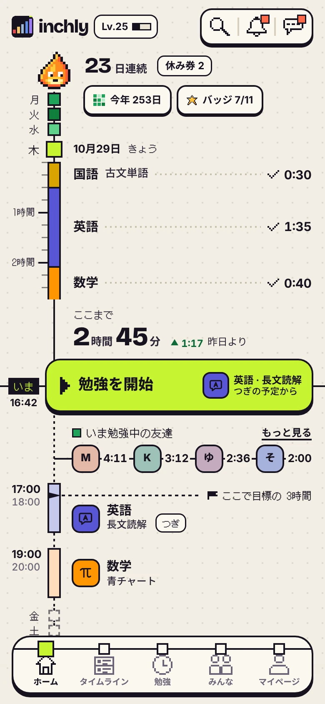
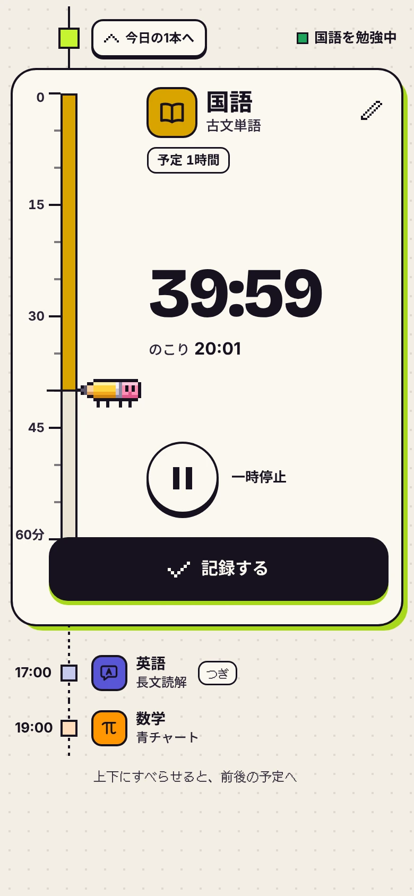
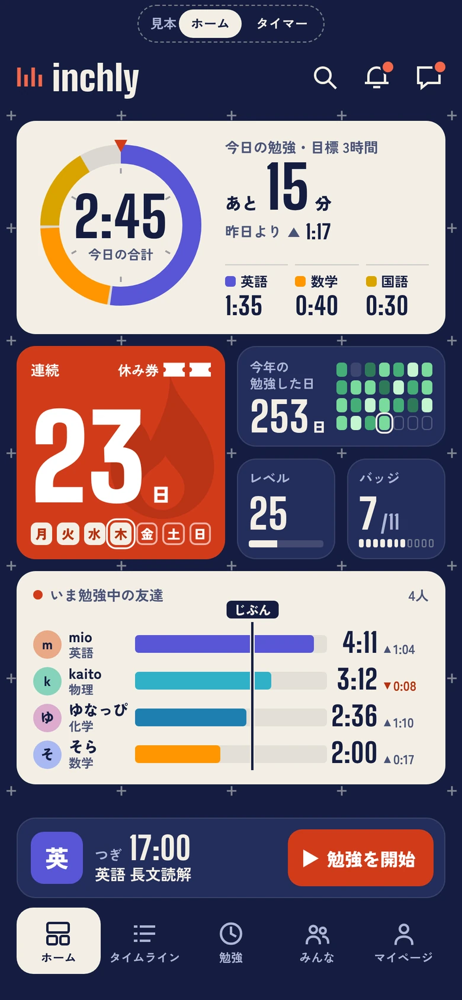
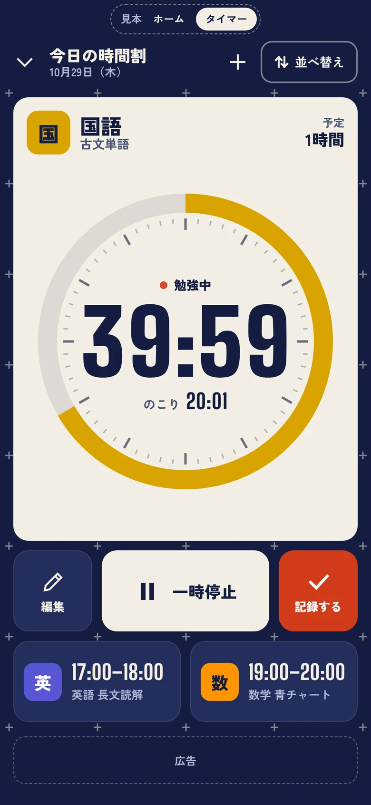
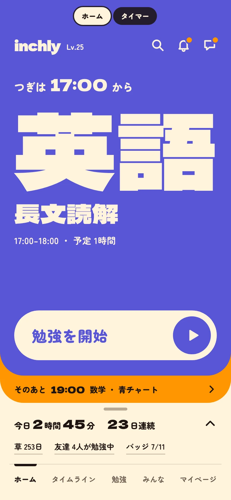
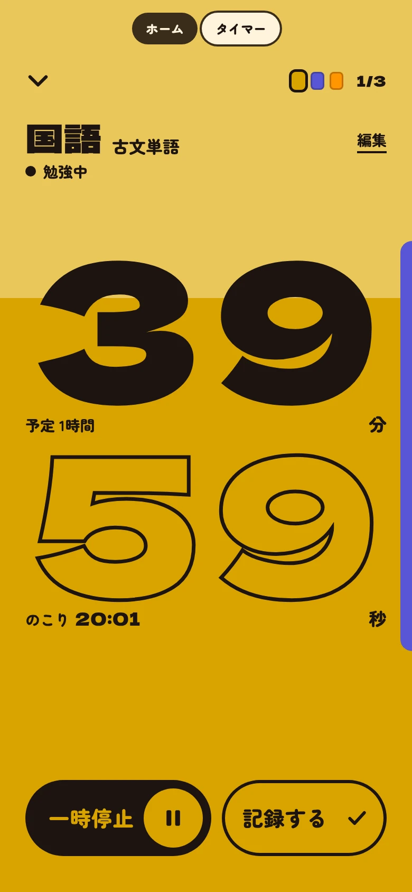
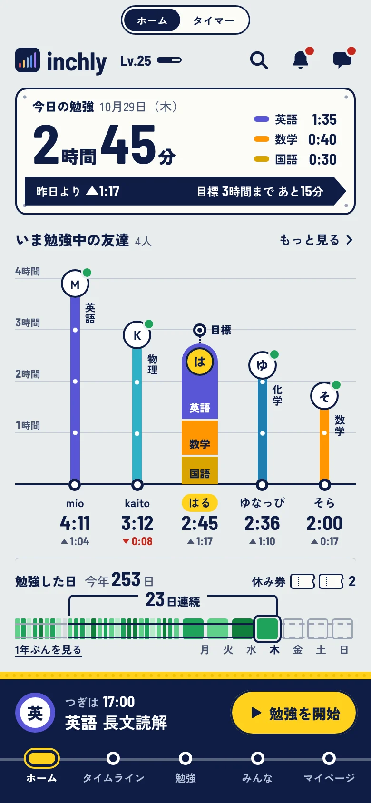
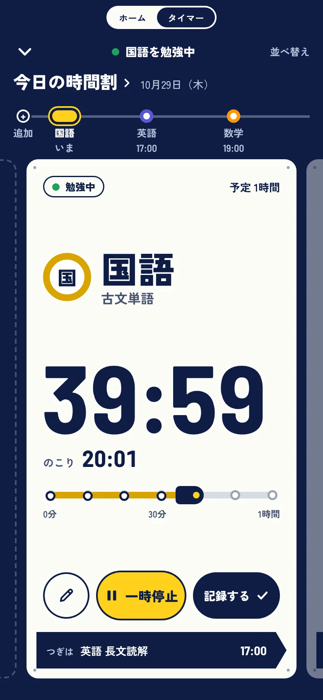

A 今日の1本
見た目は今のスタンダードのまま。レイアウトだけを変えた案。
- 考え
- カードの山をやめて、今日を1本のたての線にした。やった分は科目の色の帯、これからの予定は白い帯。
- 主役
- 線の「いま」にある「勉強を開始」。勉強バーをここに合体させた。
- しまった物
- 草とバッジは、線の頭の「今年 253日」「バッジ 7/11」を押すと開く。友達は顔と時間だけ。
- 気になる所
- 下へ長くなる。友達の「昨日との差」が1つ奥に入る。
雰囲気がわかる簡単な案です。どれもホームとタイマーの2画面だけで、中身はアプリにある事実（機能と見本の数字）だけを使っています。「開いてさわる」で、スマホではそのままアプリの画面として見られます。


見た目は今のスタンダードのまま。レイアウトだけを変えた案。


紺の盤に、大きさの違うタイルを置く。見た目も新しい案。


画面には「次にやること」だけ。字が主役の案。


切り口を決めずに自由に作らせた案。inch by inch を「各駅停車」と読んだ。
どの案も、記録まち・まとめて記録・ほかのタブなどはまだ作っていません。方向が決まったら、その案で全画面をしっかり作ります。
「A のレイアウトに D の友達の見せ方」のように、案をまたいで組み合わせることもできます。